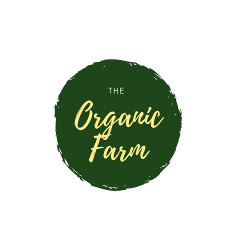

Our story begins in 1920 when Nana Margaret had started building her farm from her love for the organic and the desire to have a place where the nature can follow its course while showing respect for every form of life. That is where our family tradidion of caring and being in touch whith everything that surrounds us began. As times were always changing, in order to keep on going, so did Nana's Organic Farm, which went from helping the neighbours to supplying the local shops, then moved on to delivering to small markets. Right now we felt it was the time for another change and we thought the best way to do that is to launch our online platform where we can meet your needs whether you are a homekeeper or an entreprenour! We are hoping this will bring us closer and allow The Organic Farm-ily-as we call it here -grow! We hope you enjoy our website which offers a variety of products to deliver to your door. You can choose from our finest hand-picked fruit and vegetables, try our meat and poultry section for fresh products or let us surprise you with one of our Pre-Selected Boxes, we promise not to let you down!